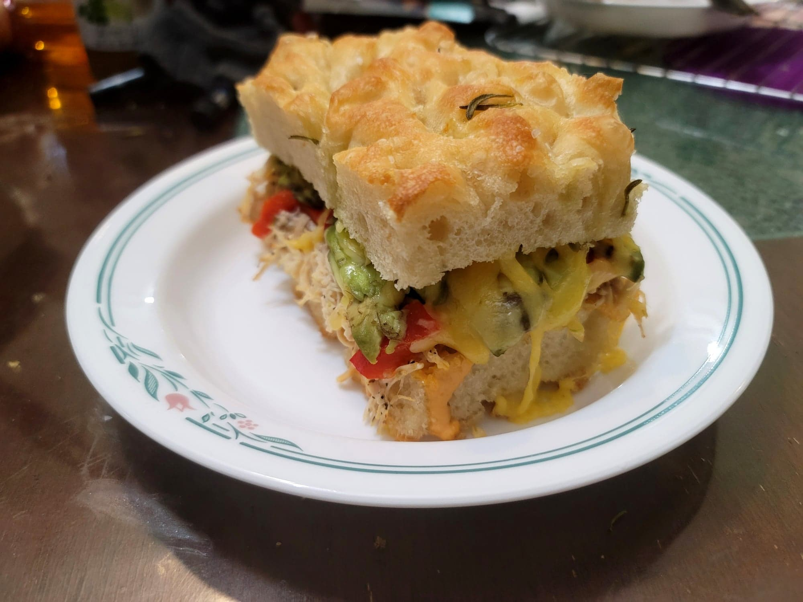

Chipotle Chicken Avocado Melt

Ingredients:
Chipotle Mayo:
- 1/3 cup Mayonnaise
- 1 tbsp Adobo sauce, from can of chipotle peppers in adobo sauce
- 1/2 chipotle pepper, minced from can of chipotle peppers in adobo sauce
Chipotle Chicken Avocado Melt
- 4 pieces Foccacia, sliced in half
- 1 lb Cooked shredded chicken breasts
- 1/4 cup Roasted red peppers, julienned
- 1 Avocado, sliced
- 4 slices Smoked gouda cheese
Instructions:
- Combine the ingredients for the chipotle mayo into a bowl. Whisk to combine.
- Spread some mayo over the bottom half of a piece of focaccia. Then place 1/4 of the chicken, 1 tbsp roasted red bell pepper, 1/4 of the avocado, 1 slice of cheese, and then the other half of the focaccia piece in that order. Repeat this for the other pieces of focaccia.
- Either heat this in a covered skillet over medium heat or in an oven preheated to 350 degrees Fahrenheit until the cheese is melted, about 3-5 minutes. Serve warm.